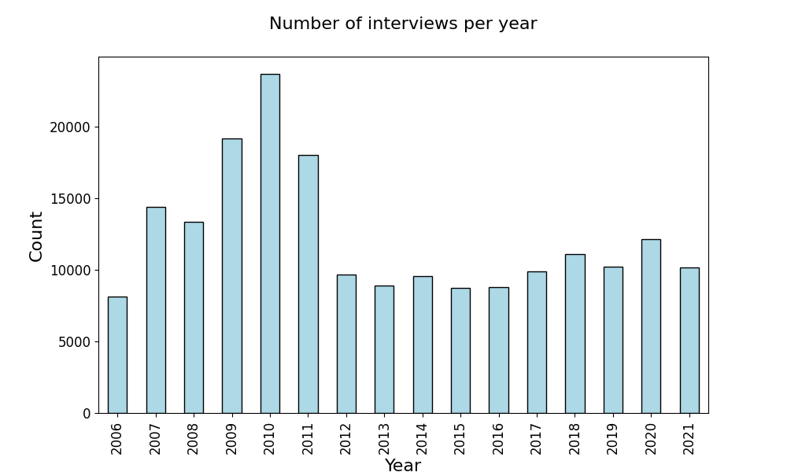

The data used in this project comes from the Danish National Travel Survey (Transportvaneundersøgelsen), which is a survey that aims to gather information on the transport behaviour of Danes residing in Denmark [1]. The survey is managed by DTU Transport on behalf of a group of Danish authorities and organisations. Here are some key points that describe the survey:
We will use two main datasets from the TU database. The Session dataset contains the background data about the person being interviewed, such as age, gender, home address, occupation etc. It contains:
196006 one-day travel diaries in total
139093 (71%) of participants owns a bike 🚲
The Tur dataset contains information on every trip in the one-day travel diary and includes details such as the time of departure and arrival, the mode of transport and the purpose of the trip. This dataset contains:
575629 trips in total
88688 (15%) bike trips 🚲
The left bar chart below shows the number of interviews conducted per year since the beginning of the survey in 2006. For some reason the number peaked in 2007-2011 but have stayed roughly constant at 10,000 interviews per year since then. The plot to the right shows the summed distance for all bike trips for the top 15 municipalities. Copenhagen bikes more than four times the distance of other cities, however, we have not adjusted for the population difference here.
In our analysis, we will use subsets of the dataset depending on the analysis aim. In general, we focus on the trips where ‘bicycle’ is the primary mode of transport. Furthermore, for parts of the analysis we focus on the 15 top municipalities when it comes to total distance travelled by bike. These are shown in the plot to the right. In the interactive Bokeh plot below, we show the number of one-day travel diaries that contain one or more bike trips for the 15 municipalities for each year of the survey.
Narrative genre
We will make use of several genres of narrative visualization [2]. For example, a multi-view visualization (“partitioned poster”) to have a loose order to images, possibly combined with Flow Chart to suggest a path to the viewer. Time-series data can be displayed using Annotated Graphs with tabs that allow for interactivity by selecting the time range one is interested in seeing.
Visual Narrative
We have made use of several visual devices to assist and facilitate the narrative. Some of our interactive plots contain tabs or a timeline slider to communicate the overall structure within the larger organization of the visualization. Color and size have been used to highlight specific elements of our plots and direct the reader’s attention to important parts. We have made limited use of Transition guidance tools, since most our visualizations don’t contain film or moving images.
Narrative Structure
For the ordering of the website content we have aimed for a user directed path without a prescribed ordering of plots and a high degree of interactivity. The interactive components include hovering, selection and navigation buttons that allow the reader to create a customized view of the data. From the messaging tools, we have made use of captions and annotations to provide observations and explanations about the plots.
References:
[1] Danish National Travel Survey, DOI: 10.11581/dtu:00000034. Documentation: Catalogue of variables.
[2] E. Segel and J. Heer, “Narrative Visualization: Telling Stories with Data,” in IEEE Transactions on Visualization and Computer Graphics, vol. 16, no. 6, pp. 1139-1148, Nov.-Dec. 2010, doi: 10.1109/TVCG.2010.179.